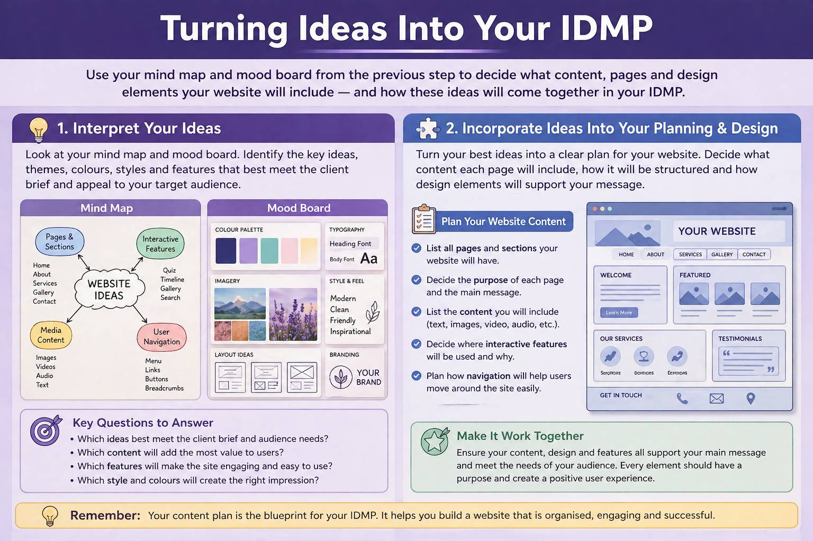

Task 1A(iii) Content ideas
Use your mind map and mood board from page 02 to decide what content your IDMP will include and how those ideas will become part of your website design.
How to interpret your page 02 ideas
Your mind map and mood board should now become useful planning evidence. Look back at the ideas you generated and decide which ones will actually appear in your Interactive Digital Media Product.
Turn mind map ideas into website content
For each strong idea from your mind map, explain how it could become a real part of your website.
- Page ideas: Which pages will your IDMP need? For example: home, about, gallery, information, events, products, quiz, contact or help.
- Content ideas: What text, images, videos, audio or graphics will each page need?
- Interactive ideas: How could the user click, explore, answer, filter, navigate or interact with the product?
- Navigation ideas: How will users move between pages or sections?
- Audience link: Why will this content suit the target audience from the brief?
- Purpose link: How will this idea help the IDMP inform, promote, educate, entertain or persuade?
Turn mood board ideas into design choices
Your mood board should help you decide how your IDMP will look and feel. Explain how the visual ideas will influence your planning and design.
- Colours: Which colours will you use and why do they fit the theme, client or audience?
- Typography: Which font style will suit the tone of the product?
- Layout: What page layout ideas will you use, such as cards, hero sections, grids, banners or image galleries?
- Imagery: What style of images, icons or graphics will match the topic?
- Branding: What logo, title style or visual identity could make the IDMP feel professional?
- Atmosphere: What mood should the user feel when using the product?
Remember: The question is asking you to generate ideas for the content of your IDMP. Strong evidence explains what will go into the website, where it will appear, and why it is suitable for the brief.
What to write in your coursework
A good response should clearly connect an idea from page 02 to a specific design decision for your final IDMP.
Useful writing structure
- Idea from my mind map/mood board: Identify the idea you are using.
- How I will use it: Explain how it will appear in your IDMP.
- Where it will appear: Name the page, section or feature.
- Why it is suitable: Link it to the client brief, audience or purpose.
Example answers
Basic: I will include images and information on my website.
Better: From my mind map, I identified that the audience will need clear information quickly. I will include a homepage with a short welcome section, three information cards and a clear call-to-action button. This will help users understand the purpose of the IDMP without having to read too much text.
Strong: My mood board uses bold colours, large headings and image-led layouts. I will use this in my design by creating a homepage hero section with a large background image, a clear title and a button linking to the main content. This suits the target audience because it makes the website feel modern, visual and easy to navigate.
Common misses
- Only describing the mind map or mood board instead of explaining how the ideas will be used.
- Writing vague content such as “I will add pictures” without saying what the images show or why they are needed.
- Forgetting to link ideas back to the client brief, target audience or purpose.
- Listing pages without explaining what content each page will contain.
- Choosing design ideas that do not match the topic, audience or mood board.
Key point: Your teacher/examiner should be able to see a clear journey: idea → website content → design choice → reason linked to the brief.